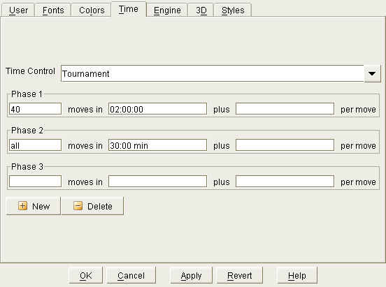

|
|
jose 1.4.1 |
|

Edit time control settings. Use the Popup List on top to choose one of the settings.
Use the leftmost input field to enter the number of moves. Enter "all" to indicate that all moves must be made in a certain amount of time.
Use the second input field to specify an amount of time, e.g. "5 min", or "2:00" meaning 2 hours.
Use ":" to separate hours, minutes and seconds. For example:
Use the rightmost input field to enter an amount that is added after each move. This field is optional.
You can specify multiple time control phases, for example:
Creates a new time control setting. Enter a name and time control settings.
Delete the current settting.
|
|
© 2002-2006 jose-chess.sourceforge.net |
|